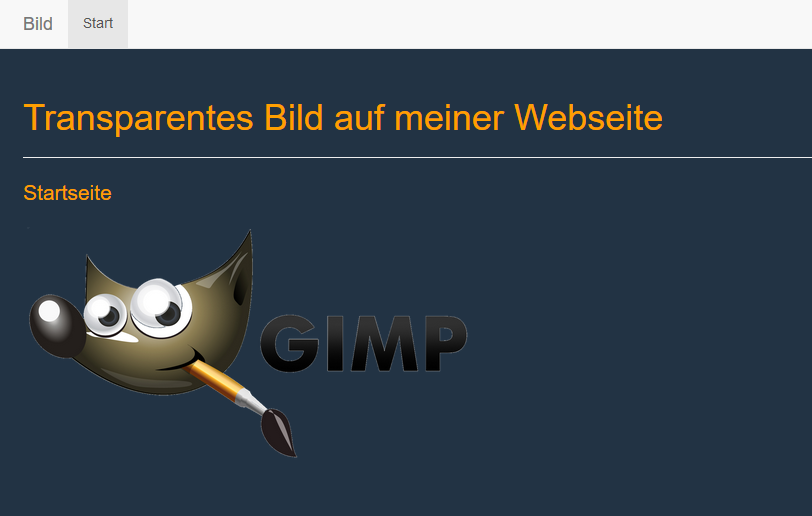
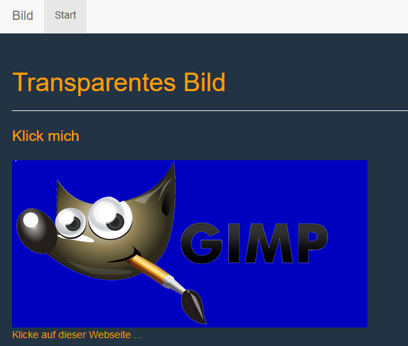
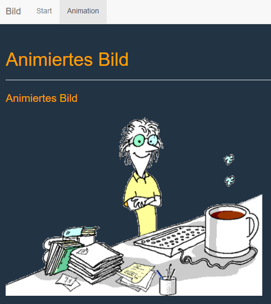
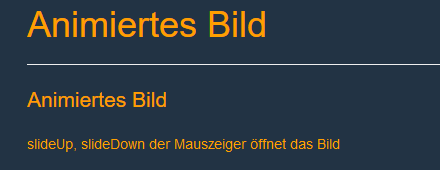

jQuery CSS Aufgabe
Aufgabenstellung
1) Erstellen Sie eine Startseite, bei der Sie das transparente Bild «gimp-logo_transparent.png» verwenden. Das Bild soll eine Breite von 500px haben. Damit der transparente Hintergrund auch sichtbar wird, müssen Sie eine Hintergrundfarbe (#223344) für den Body verwenden. Die Schrift soll die Farbe «#FF9F00» erhalten.
2) Erstellen Sie aus dem transparenten Bild ein Bild mit farbigem Hintergrund.
Erstellen Sie mit jQuery die Funktion, die bei jedem Klick das Bild wechselt.
3) Erstellen Sie eine zweite Website «Animation» und fügen Sie das animierte GIF aus dem früheren Auftrag ein.
Informieren Sie sich über die verschiedenen Funktionen von jQuery, um Bilder zu animieren. Verwenden Sie die Funktion «slideUp» und «slideDown» um das Bild ein- und auszublenden.
4) Erstellen Sie eine neue Site und spielen Sie mit den Animationen und Effekten, die Ihnen mit jQuery zur Verfügung stehen.
Lösung
Klick mich
Klicke auf dieser Webseite ...
Animiertes Bild